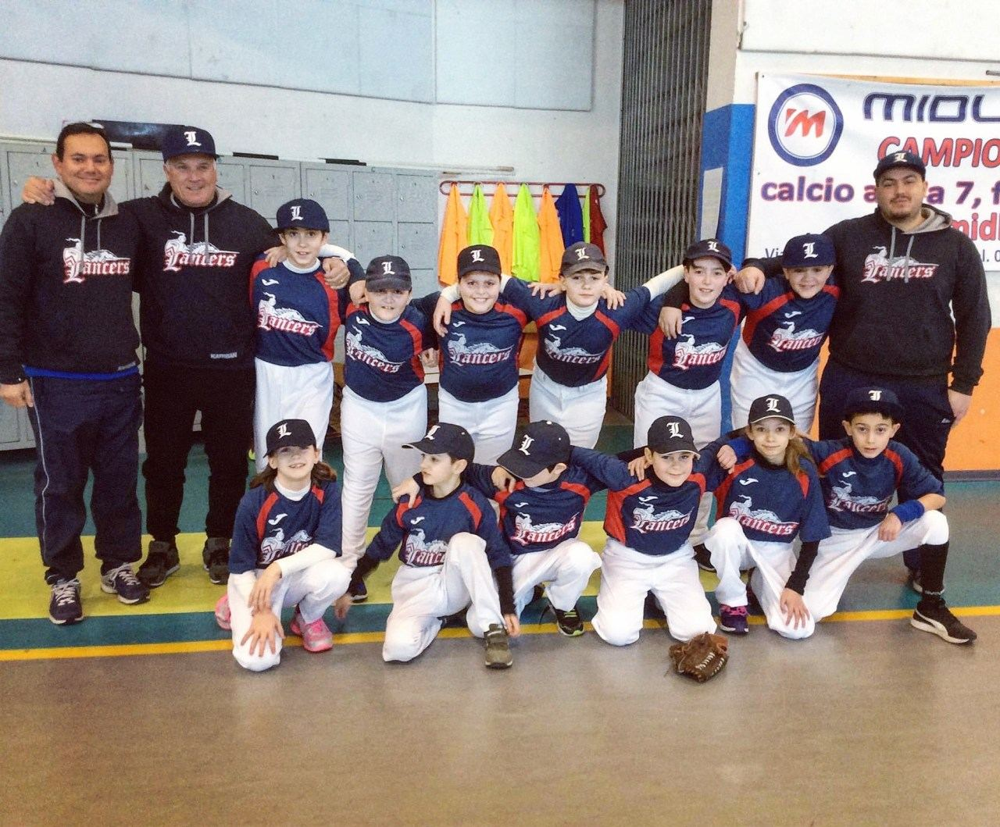
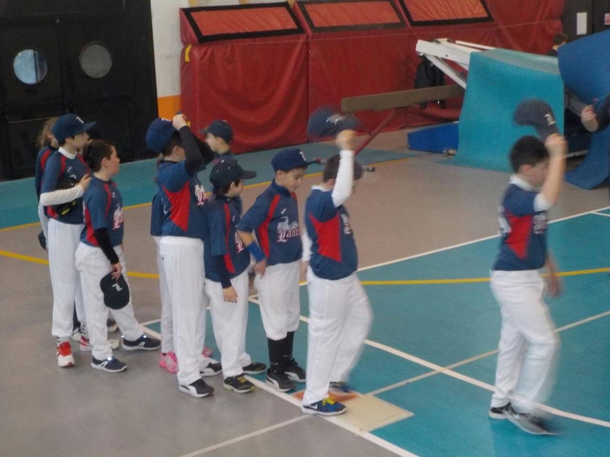

Ieri, domenica 29 Gennaio 2017, si è svolta presso la palestra dell’Istituto Gobetti-Volta di Bagno a Ripoli la prima giornata della 17ª edizione della Winter League.
I Lancers hanno presentato ai nastri di partenza una formazione mista, composta sia da elementi con esperienza che da nuove reclute che si affacciano al baseball solamente da poche settimane.
Ai coach Zalonici e Albano pesa l’assenza del jolly Gabriele Paoli, elemento fondamentale della giovane formazione lastrigiana.
Lancers vs Massa 8-2; prova di forza dei Lancieri che si impongono senza troppi problemi sui coetanei massesi. Sul monte parte Lopez in batteria con Pellegrini, successivamente i due si scambieranno i ruoli per chiudere la gara.
Ottima prestazione dell’intera difesa che assorbe alla grande i tentativi del Massa di portare punti, bene anche in fase di attacco dove i Lancers battono poco ma sfruttano a pieno il poco controllo dei lanciatori avversari.
Sulle basi si vedono scivolate di spessore, da evidenziare le prestazioni dell’esordiente Noemi e del figlio d’arte Lenzerini che, con occhio attento, gira con grinta solamente i lanci all’interno dell’area dello strike.

Arezzo vs Lancers 9-1; evidente superiorità della squadra aretina, complice anche la maggiore esperienza dei giocatori avversari quasi tutti all’ultimo anno in questa categoria.
Inizia bene la nostra partita con 3 giocatori in base su ball, l’esordiente Lorenzo Sarubbi batte una rimbalzante che porta a casa il nostro unico punto dell’incontro.
L’Arezzo non si arrende e anzi, sugli imprecisi lanci dei nostri pitcher, dilaga e mostra tutta la propria forza.
Peccato per la giornata no dei nostri lanciatori ma grande soddisfazione da parte del nostro staff tecnico per un’altra esordiente “di carattere”, la giovane Silvia Onori che batte con efficacia e corre aggressiva sulle basi.
A fine giornata i coach Roberto e Silvano si dicono molto soddisfatti dei propri ragazzi, la giornata si chiude con un ottimo secondo posto, una vittoria ed una sconfitta ma soprattutto tante cose positive viste anche, e soprattutto, nelle nuove leve.
Eccellente il nostro veterano, Lorenzo “Bomber” Scarpulla, che ha tenuto concentrata la squadra in entrambi gli incontri e l’ha successivamente guidata nel giro di basi finale (oramai è un rito) correndo e scherzando assieme ai propri compagni.
Questo è il momento più bello, è il baseball sano e genuino che vogliamo vedere!
Ci vediamo domenica 12 Febbraio per le fasi successive della Winter League 2017.
GO LANCERS, GO!